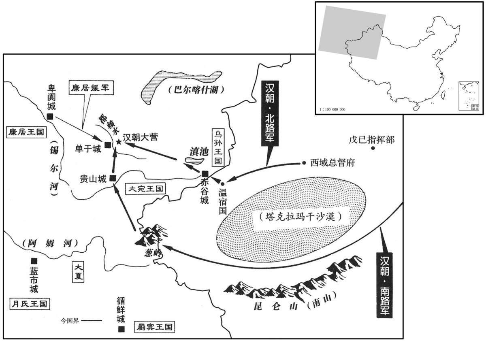

公元前36年资治通鉴：本年记事、原文与白话对照
按原书编年位置阅读；追叙和史论不等于本年发生的事件。白话采用所据译本，缺译不以生成译文补齐。
卷29 · 本年记事
公元前36年 · 汉孝元皇帝永光三年
三年〔（乙酉、前三六）〕
本年事件索引（现代整理）
夏，六月，甲辰，扶阳共侯韦玄成薨。〔共，音恭。〕
夏季，六月甲辰（十九日）丞相扶阳侯韦玄成去世。
秋，七月，匡衡为丞相。戊辰，卫尉李延寿为御史大夫。
秋季，七月，元帝擢升匡衡作丞相。戊辰（十四日），擢升卫尉李延寿当御史大夫。
秋，七月，匡衡为丞相。戊辰，卫尉李延寿为御史大夫。
本段缺少可靠对应白话，原文完整保留；未使用生成译文。
冬，使西域都护、骑都尉北地甘延寿、副校尉山阳陈汤〔师古曰：言延寿及汤本充西域之使，故先言使而后序其官职及姓名。使，疏吏翻。〕共诛斩〔【章：乙十一行本「斩」下有「匈奴」二字；孔本同。】〕郅支单于于康居。
冬季，命西域都护、骑都尉、北地郡人甘延寿，和副校尉、山阳郡人陈汤一同出兵，在康居王国斩杀郅支单于。

始，郅支单于自以大国，威名尊重，又乘胜骄，〔郅支尝破杀闰振，攻破呼韩邪，又杀伊利目，屡破乌孙兵，故乘胜气而骄也。〕不为康居王礼，怒杀康居王女〔康居王以女妻郅支，事见上卷初元五年。〕及贵人、人民数百，或支解投都赖水中；〔师古曰：支解，谓截其四支。都赖，郅支水名。余谓都赖水在康居国郅支城旁。〕发民作城，日作五百人，二岁乃已。又遣使责阖苏、大宛诸国岁遗，〔师古曰：胡广云：康居北可一千里有国名奄蔡，一名阖苏。然则阖苏即奄蔡也。岁遗者，年常所献之物。遗，弋季翻。〕不敢不予。〔予，读曰与。〕汉遣使三辈至康居，求谷吉等死，〔杀谷吉见上卷初元五年。师古曰：死，尸也。〕郅支困辱使者，不肯奉诏；而因都护上书，言「居困繍，愿归计强汉，遣子入侍。」〔师古曰：故为此言以调戏也。归计，谓归附而受计策也。〕其骄嫚如此。
最初，郅支单于自以为匈奴汗国是一个大国，威名远扬，颇受别国尊重，又乘军事胜利而十分骄傲。因为不得康居王礼敬，一怒之下杀了康居王的女儿及康居贵族、平民数百人，有的还截其四肢，扔到都赖水里。他强迫康居人为他建筑城垣，每日有五百名工匠施工，历时二年才完成。又派出使节，前往阖苏王国、大宛王国，责令每年进贡。二国畏惧郅支单于，不敢不给。汉朝前后派出三批使节，前往康居郅支单于处，查问谷吉等人的遗体下落。郅支对于汉朝使节窘困侮辱，不肯接受汉朝皇帝的诏书，只是通过西域都护上书，说：“居住的地方环境困苦，愿意归顺强大的汉朝，还打算派儿子去当人质。”其态度傲慢如此。
汤为人沈勇，有大虑，〔沈，持林翻。〕多策略，喜奇功，〔师古曰：喜，音许吏翻。〕与延寿谋曰：「夷狄畏服大种，其天性也。〔种，章勇翻。〕西域本属匈奴，〔武帝虽通西域，匈奴犹役属之；至宣帝时，朝呼韩邪，降日逐，西域乃咸属汉。〕今郅支单于威名远闻，〔闻，音问。〕侵陵乌孙、大宛，〔宛，于元翻。〕常为康居画计，欲降服之；〔为，于伪翻。降，户江翻。〕如得此二国，数年之间，城郭诸国危矣。且其人剽悍，〔师古曰：剽，轻也。悍，勇也。剽，平妙翻，又匹妙翻。悍，胡干翻，又下罕翻。〕好战伐，数取胜；久畜之，必为西域患。〔好，呼到翻。数，所角翻。畜，许六翻。〕虽所在绝远，蛮夷无公城、强弩之守。如发屯田吏士，〔即屯田车师者。〕驱从乌孙众兵，〔师古曰：驱率之令随从也。驱，与驱同；下同。〕直指其城下，彼亡则无所之，守则不足自保，〔师古曰：之，往也。保，安也。〕千载之功可一朝而成也！」〔载，子亥翻。〕延寿以为然；欲奏请之。汤曰：「国家与公卿议，〔此时已称天子为国家，非至东都始然也。〕大策非凡所见，事必不从。」〔师古曰：言凡庸之人不能远见，将坏其事也。〕延寿犹与不听。〔与，读曰豫；即犹豫也。〕会其久病；汤独矫制发城郭诸国兵、车师戊己校尉屯田吏士。〔戊己校屯田车师。〕延寿闻之，惊起，欲止焉。汤怒，按剑叱延寿曰：「大众已集会，竖子欲沮众邪！」〔师古曰：沮，止也，坏也，音材汝翻。〕延寿遂从之。部勒行陈，〔行，户刚翻。陈，读曰阵。〕汉兵、胡兵合四万余人。延寿、汤上疏自劾奏矫制，〔劾，户概翻。自劾，自奏其矫制之罪也。〕陈言兵状，即日引军分行，别为六校：〔别，彼列翻，分也。按汤传，益置阳威、合骑、白虎之校，并副校尉、戊校尉、己校尉为六校。校，户教翻。〕其三校从南道踰葱领，径大宛；其三校都护自将，发温宿国，从北道入赤谷，过乌孙，〔温宿国，东至都护治所二千三百八十里，北至乌孙赤谷六百一十里。〕涉康居界，至阗池西。而康居副王抱阗将数千骑寇赤谷城东，〔文颖曰：阗，音填。〕杀略大昆弥千余人，驱畜产甚多，从后与汉军相及，颇寇盗后重。〔师古曰：重，谓辎重也，音直用翻。〕汤纵胡兵击之，杀四百六十人，得其所略民四百七十人，还付大昆弥，其马、牛、羊以给军食。又捕得抱阗贵人伊奴毒。入康居东界，令军不得为寇。〔师古曰：勿抄掠也。〕间呼其贵人屠墨见之，〔师古曰：间，谓密呼也。间，古苋翻。〕谕以威信，与饮、盟，遣去。〔既与之饮，又与之盟也。〕径引行，未至单于城可六十里，止营。复捕得康居贵人具〔【章：乙十一行本「具」作「贝」；下同；退斋校同。】〕色子男开牟以为导。〔复，扶又翻。〕具色子，即屠墨母之弟，〔师古曰：母之弟，即谓舅者。〕皆怨单于，由是具知郅支情。明日，引行，未至城三十里，止营。
陈汤为人沉着勇敢，能深思熟虑，富有计策谋略，渴望建立奇特的功勋，他向甘延寿建议说：“边境各族畏惧匈奴，这是天性。西域各国，本来都属匈奴管辖，而今郅支单于的威名传播很远，不断侵略乌孙王国和大宛王国，经常给康居王国出谋划策，企图使乌孙、大宛投降归顺。如果把这两国征服，只要几年时间，西域城邦国家都会陷于危险的境 地。郅支单于性情剽悍，喜好战争，不断取得胜利。日子一久，必将成为西域的灾难。虽然他现在地处遥远，幸而他们没有坚固的城堡和强劲的弓弩，无法固守。我们如果征发屯田的军队，并率领乌孙王国的军队，一直挺进到他的城堡之下，他要逃没有地方可逃，要守则兵力不足以自保，千载难逢的功业可以在一天早上完成。”甘延寿认为有理，准备先奏请朝廷批准。陈汤说：“圣上一定会召集公卿商议，远大的策略，不是平庸的官僚所能了解，肯定不同意。”甘延寿迟疑，不肯听他的话。正好甘延寿久病卧床，陈汤单独行动，假传圣旨，征发各城邦国家的军队、车师戊己校尉的屯田部队。甘延寿听说了这件事，大惊而起，要加阻止，陈汤大怒，手按剑柄，叱责甘延寿说：“大军已经集中会合，你小子打算阻止大军吗？”甘延寿于是顺从。他俩部署、集结汉朝和西域多国兵力，共有四万余人。甘延寿、陈汤上奏章自我弹劾假传圣旨之罪，陈述所以如此做的理由。发出奏章的当天，大军出发，分成六路纵队，其中三路纵队沿南道越过葱岭，穿过大宛王国。另三路纵队，由都护甘延寿亲自率领，从温宿国出发，由北道经乌孙王国首府赤谷城，穿过乌孙王国，进入康居王国边界，挺进到阗池西岸。而这时康居王国的副王抱阗，率领数千骑兵，在赤谷城东方攻击乌孙王国大昆弥地区，屠杀及俘虏千余人，抢走牛、羊、马等大批牲畜，然后从后面追上汉军，夺取汉军后部的大批辎重。陈汤命西域兵迎战，杀四百六十人，夺回抱阗所掳掠的乌孙百姓四百七十人，交给大昆弥。而夺回的马匹、牛、羊，则留下来作为军队食物。又逮捕到抱阗手下的贵族伊奴毒。进入康居王国东部国界后，陈崐汤严明军纪，不准烧杀抢掠。秘密召康居王国的贵族屠墨来会晤，向他展示汉朝的威力与决心，摆下酒筵席，共同盟誓，然后送他回去。大军继续挺进，在距新筑的单于城约六十里处，安营扎寨。这时，又俘虏康居王国另一贵族具色子男开牟，让他作向导。具色子男开牟是屠墨的舅父，也痛恨郅支单于的凶暴。汉朝军队于是对郅支单于内部的情况，了如指掌。第二天，大军继续挺进，距单于城三十里，扎营。
单于遣使问：「汉兵何以来﹖」应曰：「单于上书言：『居困繍，愿归计强汉，身入朝见，』〔朝，直遥翻。见，贤遍翻。〕天子哀闵单于，弃大国，屈意康居，故使都护将军来迎单于妻子。〔当此时，甘延寿止为西域都护；以将兵故称将军。至光武时，遂以贾复为都护将军。复之都护，盖护诸将也。〕恐左右惊动，故未敢至城下。」使数往来相答报，〔数，所角翻；下同。〕延寿、汤因让之；〔师古曰：让，责也。〕「我为单于远来，〔为，于伪翻。〕而至今无名王、大人见将军受事者，〔师古曰：名王，诸王之贵者。受事，受教命而供事也。〕何单于忽大计，失客主之礼也！〔师古曰：忽，忘也，又轻也。〕兵来道远，人畜罢极，食度且尽，〔师古曰：罢，读曰疲。度，音大各翻。〕恐无以自还，愿单于与大臣审计策！」
郅支单于派使节前来询问：“汉朝军队到这里来的目的何在？”汉军的官员回答说：“你们单于曾经上书汉朝皇帝，说：‘居住环境困苦，愿意归降强大的汉朝，亲身到长安朝见。’皇帝怜悯单于放弃幅员广大的国土，委屈地住在康居，所以派遣都护将军，率军前来迎接单于及妻子儿女。恐怕单于的左右惊动，所以没有敢于直接到达城下。”双方使节来往了几次之后，甘延寿、陈汤出面，责备郅支单于的使节说：“我们为了单于，不远万里来到此地，然而，一直到今天，他还没有派出一位名王、显贵，前来晋见都护将军，接受命令而供事，为什么单于对大事这么疏忽，不讲主人待客人的礼节？我们从遥远的地方到此，人马困乏已极，而粮草又快用完，恐怕连回程都不够用，请单于跟大臣们慎重考虑。”
明日，前至郅支城都赖水上，离城三里，〔离，力智翻。〕止营傅陈。〔师古曰：傅，读曰敷，布也。陈，读曰阵；下同。〕望见单于城上立五采幡帜，〔帜，昌志翻。〕数百人被甲乘城；〔师古曰：乘，谓登之备守也。被，皮义翻；下同。〕又出百余骑往来驰城下，步兵百余人夹门鱼鳞陈，〔师古曰：言其相接次，形若鱼鳞。〕讲习用兵。城上人更招汉军曰：「来！」〔师古曰：更，互也，音工衡翻。〕百余骑驰赴营，营皆张弩持满指之，骑引却。颇遣吏士射城门骑、步兵，〔射，而亦翻；下同。〕骑、步兵皆入。延寿、汤令军：「闻鼓音，皆薄城下，〔薄，伯各翻。〕四面围城，各有所守，穿芈，塞门户，〔芈，即堑字，音尺艳翻。塞，悉则翻。〕卤楯为前，戟弩为后，〔楯，食尹翻。〕仰射城楼上人。」楼上人下走；土城外有重木城，〔重，直龙翻。〕从木城中射，颇杀伤外人。外人发薪烧木城，〔孔颖达曰：薪，樵也。大樵曰薪。诗云：析薪如之何﹖匪斧不克。是大，故用斧也。〕夜，数百骑欲出外，迎射，杀之。
次日，大军挺进到都赖水畔，在距单于城三里外扎营，构筑阵地，遥望单于城上，五色旗帜迎风飘扬，数百匈奴人披甲戴胄，登上城楼守备。又从城中冲出一百余名骑兵，往来奔驰城下。一百余名匈奴步兵，在城门两侧，结成“鱼鳞阵”，正作战斗演习。城上守军还向汉朝军队挑战：“来打吧！”一百余名匈奴骑兵直冲汉营，汉营的强弩全部拉满，箭矢外指。匈奴骑兵不敢攻击，撤退。强弩部队射击城门外操练的匈奴骑兵、步兵，匈奴兵全部退入城内。甘延寿、陈汤下令总攻：“听到鼓声，都直扑城下，四面包围，各军记住所分配的位置，开凿洞穴，堵塞射击孔。盾牌在前，戟弩在后，仰射城楼上的守军。”攻击开始，城楼上的匈奴守军退下逃走。土城之外，还有由两层木樯构成的重木城。匈奴人由木城射击，使汉朝远征军多有伤亡。于是远征军以薪纵火，焚烧木城。入夜，匈奴守军骑兵数百名突围，汉军予以迎头痛击，箭如雨下，全部歼灭。
初，单于闻汉兵至，欲去，疑康居怨己，为汉内应，又闻乌孙诸国兵皆发，自以无所之。〔言郅支自计无所往而可也。〕郅支已出，复还，〔复，扶又翻。〕曰：「不如坚守。汉兵远来，不能久攻。」单于乃被甲在楼上，〔被，皮义翻。〕诸阏氏、夫人数十皆以弓射外人。外人射中单于鼻，〔中，竹仲翻。〕诸夫人颇死；单于乃下。夜过半，木城穿；中人却入土城，乘城呼。〔中人，本城中人也。师古曰：呼，音火故翻；下同。〕时康居兵万余骑，分为十余处，四面环城，亦与相应和。〔师古曰：环，绕也，音宦。和，胡卧翻。〕夜，数奔营，不利，辄却。平明，四面火起，吏士喜，大呼乘之，〔师古曰：乘，逐也。余谓乘，驾也；乘火起之势而驾之也。〕钲、鼓声动地。〔钲，音征，铙也，其状似铃。杜佑曰：镯，钲也。形如小锺，军行鸣之，以为鼓节。周礼：以金镯节鼓。近代有大铜迭，悬而击之，以节鼓，曰钲。〕康居兵引却；汉兵四面推卤楯，〔推，吐雷翻。〕并入土城中。单于男女百余人走入大内。〔师古曰：大内，单于之内室也。〕汉兵纵火，吏士争入，单于被创死。〔被，皮义翻。创，初良翻。〕军候假丞杜勋斩单于首。〔汉制，军行有各部校尉；部下有曲，曲有军候一人。又都护有副校尉，秩比二千石；丞一人，司马、候、千人各二人。杜勋本为军候而假丞也。〕得汉使节二及谷吉等所赍帛书；诸卤获，以畀得者。〔师古曰：畀，与也，各以与所得人；音必寐翻。〕凡斩阏氏、太子、名王以下千百一十八级；〔阏，于焉翻。氏，立支。〕生虏百四十五人，降虏千余人，赋予城郭诸国所发十五王。〔降，户江翻。师古曰：赋，谓班与之也。所发十五王，谓所发诸国之王，领兵共围郅支单于者也。予，读曰与。〕
当初，郅支单于听说汉朝军队到达，打算离开此城。可是，怀疑康居王对他怨恨，与汉朝勾结，里应外合，又听说乌孙王国等西域各国，都派出军队，自以为无处可以投奔。所以，他已逃出单于城，却又返回，说：“不如坚守。汉朝军队远征万里，不可能持久进攻。”郅支单于全身披甲，在城楼上指挥作崐战。他的阏氏、夫人共数十名，也都用弓箭射城外的汉军。汉朝的弩兵射中郅支单于的鼻子，而他的夫人也多有死亡。郅支单于于是从城楼下来。午夜之后，木城被攻破，木城中的匈奴军退入土城，登上城头，呼号呐喊。这时，康居王国一万余人的骑兵援军来到郅支城附近，分散在十余处，环绕城的东西南北四面部署，跟城上的匈奴守军互相呼应。乘着夜色，多次向汉朝军队的营地冲击，然而不能得手，每次都退下来。天将亮时，四面火起，官兵振奋，乘火势大喊，钲鼓之声动地。康居军队再向后撤。汉朝军队推举盾牌，从四面同时冲入土城中。郅支单于率匈奴男女一百余人逃入王宫，汉朝军队纵火焚烧王宫，官兵争先冲入，郅支单于身受重伤而死。军候假丞杜勋，砍下郅支单于人头。在王宫中搜出汉朝使臣的节两只以及谷吉等携带的写在帛上的书信。凡是抢掠的财物，都归抢掠者所有。斩阏氏、太子、名王及以下共一千五百一十八人，生擒一百四十五人，投降的一千余人，分配给领兵共围单于的西域十五个国王。